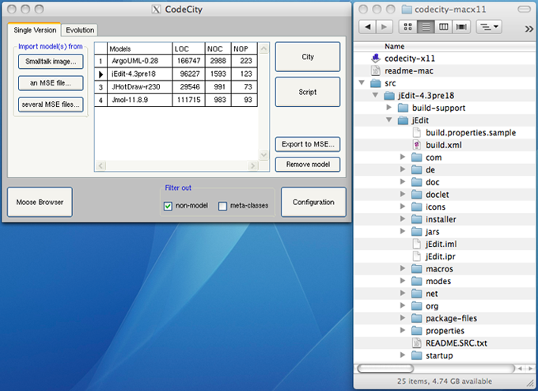

-
Can I use CodeCity for commercial purposes?
Unfortunately, not. CodeCity is developed in VisualWorks Smalltalk under an academic non-commercial license and its use is therefore limited to non-commercial.
-
How can I load a model of a Java or C++ system in CodeCity?
First, you need to import the Java system with iPlasma and export the model to MSE, choosing the FAMIX 2.1 format, otherwise it won't work. Then open CodeCity and choose "Import model(s) from an MSE file".
-
How can I load a model of a C# system in CodeCity?
For C# source code, there is PMCS (Parsing and modeling C# systems), developed by Ermira Daka during her Master Thesis and later optimized and hosted by Erik Doernenburg.
For C# DLLs, there is Tarantula, a tool provided by Peter Hellmann. It is reccomended to provide the PDB file along with a DLL or EXE assembly due to the fact, that LOC information can be obtained. If the PDB is absent, the LOC is always 0.
And for .NET assemblies, there is SharpMetrics FamixGenerator, a tool provided by Thomas Haug.
-
Can I have direct access from CodeCity to the source code of the classes I visualize?
Yes, starting with release 1.4 of CodeCity. The solution presented here was tested with sytems parsed with inFusion version 7.2.5. To link a model in CodeCity to the source code of the system, follow these steps:
- Create a folder called src inside the CodeCity application folder.
- Copy the folder that you fed into inFusion to produce the model to the src folder.
- Make sure that the name of this folder (the one containing the source code of the system) matches the name of the model in the CodeCity model list.
The following example shows the folder structure needed to link the model to the source code of jEdit-4.3pre18:

There is a known problem in which the linking does not work if CodeCity runs on Windows and the parsing of the source code was performed under Linux or MacOSX. To avoid this issue, run both CodeCity and the parser on the same operating system.